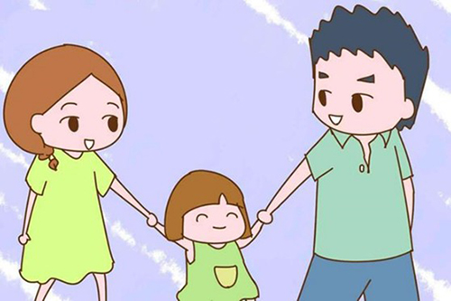

月號－哺乳育嬰站
月號－哺乳育嬰站夫妻是來自兩個不同的家庭，所以在教養小孩方面，有不同的觀點、不同的處理方式，是很正常的喔！夫妻之間管教不同調，可能造成小孩不知所措或夫妻失和，但其實只要時常溝通，是可以找到平衡點的喔！分享 6個溝通步驟，讓夫妻成為彼此的育兒神隊友。一起看看吧！ |
| 1.「情緒教育」這門課，大人也要修 |
現在愈來愈多父母注重小孩的情緒教育，「但這一塊，我們以前也沒學過，從認識情緒，到情緒的覺察、表達、接納、同理，其實大人也很需要學。」若能開始理解自身的情緒，慢慢地讓自己的心更穩定，就比較不容易被負面情緒綁架，對夫妻關係、親子關係都會有幫助。 |
| 2.試著更認識自己，也試著更瞭解彼此 |
每個情緒背後，都有原因，而且常是源自我們過往的生命經驗，在接近自身情緒的同時，也能更認識自己。當你更認識自己的同時，其實也有助於伴侶之間彼此理解，才能讓對方知道真正的自己是什麼模樣，「畢竟，我們都已經社會化了，有時連自己的真面目都不太認得，怎能奢求伴侶懂自己呢？」 |
| 3.凝聚共識，想清楚「希望孩子長成怎麼樣的人」 |
在討論教養議題時，夫妻倆「不知為何而戰」，是很普遍的情況，正因如此，先請大家思考教養的目標，仔細的想一想「希望孩子長成怎麼樣的人」，才能以終為始，找出適合的教養方式，與其糾結伴侶是豬隊友或神隊友，更關鍵的是，隊友倆要先想清楚究竟是為何而戰。 建議，夫妻之間也要撥點時間討論此事。如果目標一致、有共識，那當然很好；倘若目標不大一樣，那也無妨，可以各司其職，「比方說，媽媽在意成績、爸爸重視健康快樂，那就媽媽顧課業、爸爸陪運動玩樂。想清楚再做，會更有頭緒。」 |
| 4.尊重彼此的教養風格與作法，別一直想改變對方 |
「井水不犯河水」是較可行的方法，當某一方用自己的方法帶孩子時，另一方就請睜一隻眼、閉一隻眼，之所以這樣建議，是因為改變別人本就難，「與其把心力都花在說服另一半，不如就做好自己能掌握的，更進階的，是用自己選擇的教養方式來對待另一半，例如喜歡正向教養，那就也多鼓勵、多感謝另一半，時間久了，必能看到一些變化。 有些人會擔心，教養方式不一致，恐讓小孩錯亂，小孩的適應力，比我們想的更強。小孩在不同大人身旁時，就會有不同的表現，「也無妨，畢竟社會本是多元的，而家庭就是微型社會。」 |
| 5.時時提醒自己「對孩子要放手，對老伴要牽手」 |
主播夫妻檔岑永康、張珮珊分享，他們從以前就常常提醒自己「對孩子要放手，對老伴要牽手」。他們每年會安排家庭旅行，也會有夫妻倆的出遊，就是希望為「情感存摺」儲值。 張珮珊說，全心全意的照顧孩子，是很自然的母愛表現，但也要踩剎車，記得關愛老公，「因為老了以後，能陪在你身邊的，通常是老伴，而不是孩子，畢竟孩子有自己的人生啊！」而且，練習放手，也能促使孩子學會獨立。 夫妻相處總有摩擦，張珮珊透露，每當她對岑永康很火大時，她就會去刷牙，一方面能離開現場、避免正面衝突，另一方面，牙膏和冷水有助於冷靜，也能提醒自己不口出惡言。諸如此類的方法，有心就能找到。 |
| 6.別忘了照顧自己，也別忘了夫妻可以一起追夢 |
「太多爸媽因為愛孩子提前透支，自己過得不好，尤其在財務上更是如此。」幸福之路想走得長久，對孩子的付出就要「有止盡」、不能透支，為人父母者，別忘了要照顧好自己。 岑永康認為，夫妻之間，不一定只有妥協、忍讓，也有可能一起做夢、追夢，一起過理想中的日子。無論如何，總有人會陪你，那種感覺很好的！」他和張珮珊始終相信，一加一會大於二。 |
|  |
育兒生活中，夫妻之間的分工合作是非常重要的！良好的分工可以讓彼此有時間休息，避免壓力集中在一人身上，還能讓夫妻各自發揮長處，為孩子提供不同面向的照顧。透過合作的過程，夫妻之間也會更有默契與凝聚力。 最後也別忘了，很多時候，我們在溝通的其實不是「事情」，而是彼此的「情緒」。當另一半與你分工合作，即便是小小的事情，也可以試著多多表達你的感謝和珍惜。相信大家都可以慢慢建立起雙方都覺得舒服、有成就感的育兒生活。 |
資料來源
1.夫妻教養不同調，怎麼辦？ - 育兒文章｜媽咪愛 |